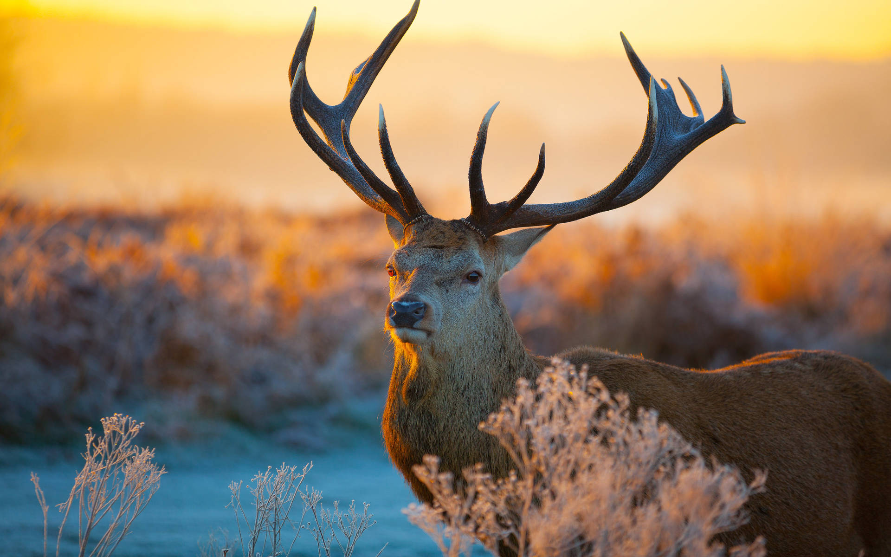
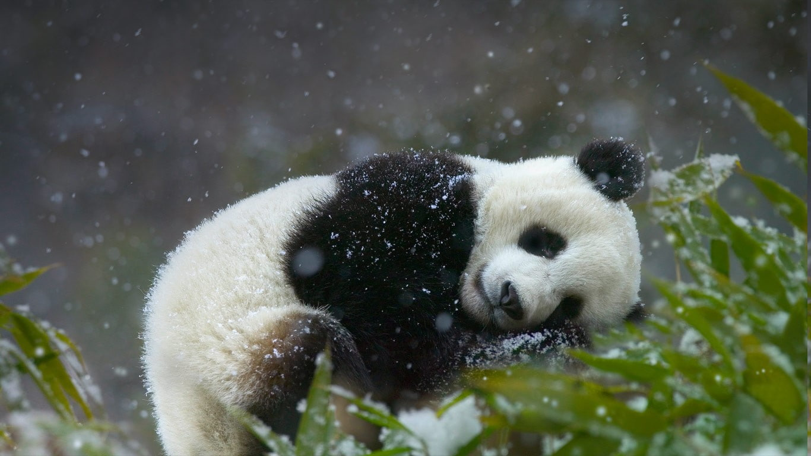
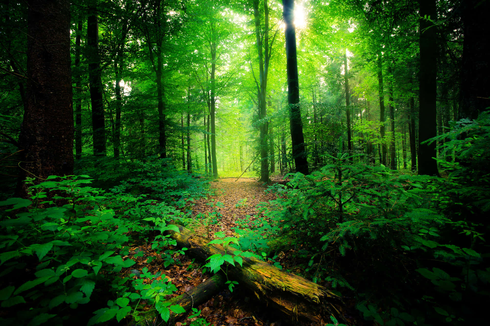

About Us

Unite for Wildlife: Preserving Our Planet's Precious Species
Over time, our nation's wildlife has endured a mounting peril stemming from unfounded superstitions, posing a significant threat to their survival. From the misguided notion that elephant tusks and hair confer good fortune to the erroneous belief in sacrificing owls for prosperity, these antiquated beliefs persist, jeopardizing the welfare of numerous wild creatures. Such practices not only imperil individual species but also disrupt entire ecosystems. Despite the existence of robust legal measures, these harmful practices persist clandestinely, underscoring the urgent need for concerted efforts to combat superstition-driven threats to wildlife conservation.

Collaborating for Conservation: Protecting Our Planet Together
The urgency of our times is underscored by the dual crises of accelerated climate change and biodiversity loss, which are intricately interconnected. With the window of opportunity rapidly narrowing, we must act decisively within years, not decades, to confront these existential threats. Through collaborative efforts and informed action, we can forge a path towards a more sustainable and hopeful future for our planet. Drawing on research from esteemed institutions like The Nature Conservancy and a coalition of twelve peer organizations, science illuminates a clearer trajectory for addressing these pressing challenges and safeguarding the Earth for generations to come.
On-Site Conservation

On-site conservation entails the preservation of ecosystems and native habitats, along with the restoration and protection of viable populations of species within their natural environments. This approach is particularly vital for safeguarding domesticated or cultivated species, ensuring their conservation in the environments where they have evolved and acquired their unique characteristics. By focusing on maintaining the integrity of natural ecosystems and supporting the resilience of species within their native surroundings, on-site conservation plays a pivotal role in sustaining biodiversity and ecological balance for future generations.
Off-Site Conservation

Ex-situ conservation encompasses the preservation of species beyond their native habitats, necessitating the relocation of genetic material from its original location. This approach facilitates convenient access to germplasm for assessment and utilization purposes. By employing methods that mimic natural living conditions, ex-situ conservation endeavors to safeguard the diverse array of living species in carefully curated environments. Examples of ex-situ conservation initiatives span across diverse institutions such as aquariums, botanical gardens, cryopreservation facilities, DNA banks, and zoological parks. These efforts play a crucial role in complementing on-site conservation strategies and ensuring the long-term viability of species facing threats in their natural habitats.
Information

What is Biodiversity?
Biodiversity, short for biological diversity, refers to the variety and variability of life on Earth at all levels, from genes to ecosystems. It encompasses the diversity of species, their genetic variations within each species, and the array of ecosystems in which they live. Biodiversity is crucial for maintaining the health and resilience of ecosystems, as well as providing essential ecosystem services such as clean air and water, pollination, and climate regulation. It also has intrinsic value, enriching human lives culturally, spiritually, and aesthetically. Protecting and conserving biodiversity is essential for sustaining life on Earth and ensuring a healthy planet for future generations.
Terrestrial biodiversity tends to be greater near the equator, which seems to be the result of the warm climate and high primary productivity. Biodiversity is not distributed evenly on Earth, and is richest in the tropics. These tropical forest ecosystems cover less than 10 percent of earth's surface, and contain about 90 percent of the world's species.
1500+
Volunteers
2500+
Trees Planted
250+
Animals Saved
1850+
Donators